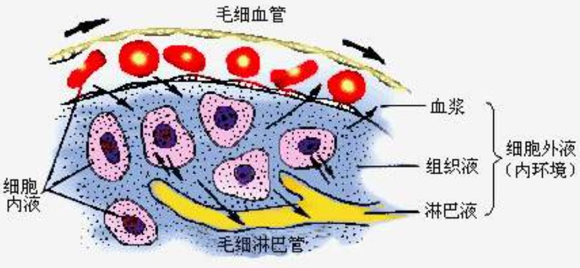

病理生理学，简称病生。
Chapter 1 疾病概述
-
1.1 病因学
-
病因
- 健康
(5%)– 亚健康(75%)– 疾病(20%) - 决定性疾病特异性 – 引起疾病，必不可少的因素
- 外源性病因
- 生物因素
- 理化因素
- 环境生态因素
- 营养因素
- 社会-心理因素
- 内源性病因
- 遗传因素（染色体畸形、基因突变、遗传易感性）
- 先天因素（胎儿）
- 免疫因素（过强、缺陷、错误）
- 健康
-
条件
- 影响疾病发生的因素 – 某种“机体状态、自然环境”
- 促进（诱因、高危因素）
- 减缓
-
-
1.2 发病学
- 一般规律
- 疾病
发生发展的规律和机制。 - 内稳态失衡
- 下丘脑->腺垂体->甲状腺
- 损伤与抗损伤并存
- 毒物->解毒
- 应激原->应激
- 自由基->抗氧化
- 出血->凝血
- 创伤->修复
- 微生物感染->免疫反应
- 因果交替
- 一级病因->一级结果、二级病因->……
- 局部与整体关联
- 颅内感染
- 败血病
- 糖尿病
- 肾病
- 疾病
- 基本机制
- 神经机制
- 乙型脑炎病毒
- 狂犬病毒
- 有机磷酸酯类中毒
- 神经反射：休克
- 体液机制
- 体液因子
- 甲亢、甲减、糖尿病
- 细胞机制
- 直接作用于组织细胞而致病（肝炎病毒入侵干细胞、疟原虫侵犯红细胞、汞中毒损害肾脏、HIV病毒侵犯T淋巴细胞等）
- 损伤细胞膜上的各种离子泵、细胞器等等。
- 分子机制
- 酶缺陷：蚕豆病、苯丙酮尿病
- 血红蛋白异常：镰刀型细胞贫血、地中海贫血
- 蛋白质分子空间构想异常：疯牛病
- 神经机制
- 一般规律
-
1.3 疾病的转归
- 康复
- 完全康复：一过性
- 不完全康复：代偿维持
- 死亡
- 机体作为一个整体功能的永久性停止。
- 脑死亡的诊断标准（哈佛标准）
- 自主呼吸停止（首要标准）
- 不可逆性深昏迷（对外界刺激无反应）
- 脑干神经反射消失（瞳孔散大固定、对光反射等）
- 脑电波消失（脑电图或脑地图呈平线）
- 脑血流循环完全停止（脑血管造影或颅脑MRI）
- 协助医务人员判定患者死亡时间，适时终止复苏抢救（节省卫生资源、减轻社会和家庭经济和情感负担）；
- 有利于器官移植。
- 全脑功能丧失、无意识、无自主呼吸、无脑干反射、无治愈可能。
- 植物状态（活人）
- 大脑皮层功能受损、主观意识丧失、有觉醒周期、有自主呼吸、有脑干反射、有治愈可能。
- 康复
Chapter 2 水、电解质紊乱
2.1 水、钠正常
-
2.1.1 体液的容量和分布
-
体液占人体
60%:- 40% ICF
- 钾离子
- 镁离子
- 磷酸一氢根离子、蛋白质
- 20% ECF
- 15% 组织间液（第三间隙液或跨细胞液：极少的部分分布于一些密闭的腔隙中）
- 5% 血浆
- 钠离子
- 氯离子、碳酸一氢根离子、蛋白质

- 40% ICF
-
影响体液因素：
- 肌肉水多，脂肪水少
- 男多女少，瘦多胖少
- 年龄越大，体液越少
- 增增减减，组织间液
-
-
细胞内外的运动：
- 水自由通过
- 蛋白质、钠离子、钾离子、钙离子等不能自由通过
-
血管内外的运动：
- 水和电解质自由通过
- 蛋白质等大分子物质通行受限
-
电解质的功能：
- 渗透压与酸碱平衡
- 静息电位、动作电位
- 新陈代谢与生理功能
-
水的生理功能：
- 调节体温
- 参与物质代谢
- 结合水维持细胞功能
- 润滑作用
-
水平衡
- 入量2000-2500ml：饮水 + 食物含水 + 代谢水（内生水）
- 出量2000-2500ml：皮肤蒸发 + 呼吸道蒸发 + 粪便排水 + 肾脏排水（最低500ml:代谢废物35g/day：最大浓度60-70g/L）
- 生理需水量：1500-2000ml/day
-
钠的生理功能：
- 血清钠离子浓度
- 成人：135-145mmol/L
- 儿童：130-150mmol/L
- 细胞外液主要阳离子。
- 维持细胞外液的渗透压、血容量、细胞内液的平衡。
- 参与神经、肌肉、心肌静息电位维持和动作电位形成。
- 血清钠离子浓度
-
钠平衡
- 细胞外液50%
- 成人：135-145mmol/L
- 儿童：130-150mmol/L
- 细胞内液10%
- 骨骼内40%
- 摄入：食盐
- 排出：肾脏、皮肤
- 多吃多排、少吃少排、不吃不排。
- 细胞外液50%
-
2.1.2 体液的渗透压
- 血浆渗透压 = 晶体渗透压（NaCl、葡萄糖等） + 胶体渗透压（清蛋白）
-
2.1.3 体液容量及渗透压的调节
- 粗调节
- 渴感
- 刺激渴感的因素：血浆晶体渗透压升高、有效血容量减少、血管紧张素II增多
- 细调节
-
抗利尿激素（ADH）：促水吸收激素
- 渴感因素 -> ADH分泌增加 -> 水重吸收增加（肾远曲小管、集合管）-> 血浆渗透压降低、血容量增加、血压升高。
-
醛固酮激素（ADS）：保钠/保水/排钾
- 血钠降低、血钾升高刺激
- 循环血量减少 –>
- 肾动脉压下降
- 交感神经兴奋
- 血钠离子下降
- 肾小球近球细胞激活
- RAAS系统被刺激
- 肾素
- 血管紧张素I
- 血管紧张素II
- 血管紧张素
- 醛固酮
-
心房钠尿肽（ANP）：心房肌细胞产生的多肽；利纳排尿
- 作用：
- 减少肾素的分泌
- 抑制醛固酮的分泌
- 对抗血管紧张素的缩血管效应
- 拮抗醛固酮的作用
- 刺激：
- 血容量扩张，牵张心房
- 血钠增加
- 血管紧张素II增加
- 作用：
-
- 粗调节
2.2 水、钠代谢紊乱
-
2.2.1 水过少（脱水）
-
2.2.1.1 高渗性脱水（低容量性高钠血症）
- 失水 > 失钠
- 血清Na > 150 mmol/L
- 血浆渗透压 > 310 mmol/L
- ECF、ICF量均减少
- 病因：摄少（水源断绝、进食饮水困难、渴感丧失）
- 病因：失多（经呼吸道失水：过度通气；皮肤失水：高热、大量出汗、甲亢；肾失水：中枢性及肾性尿崩症、渗透性利尿剂；胃肠道失水：呕吐、腹泻、消化道引流。）
- 特点1:发病环节为ECF高渗
- 特点2:脱水部位为ICF减少，细胞萎缩
- 机体影响：极度口渴、尿少、脱水热、细胞脱水
- 防治措施
补水为主、补盐为辅- 去除病因
- 单纯失水：口服补水或静脉输注5%葡萄糖
- 高钠血症严重：可用2.5-3%静脉输注
- 失水失钠：兼顾补水+补钠
-
2.2.1.2 低渗性脱水（低容量性低钠血症）
- 失钠 > 失水
- 血清Na < 130 mmol/L
- 血浆渗透压 <280 mmol/L
- ECF减少明显
- 病因：肾脏丢钠（利尿剂；肾上腺皮质功能降低；肾实质疾病；肾小管性酸中毒）
- 病因：肾外丢钠（经消化道丢失：呕吐、腹泻；皮肤丢失：出汗；积聚在第三间隙：胸水、腹水）
- 特点1:脱水部位为ECF
- 特点2:对病人的威胁为循环衰竭（休克）
- 机体影响：脱水征、血压降低、休克、细胞水肿
- 治疗原则
- 补等渗液或者高渗液
- 去除病因
- 一般用
等渗液 - 低钠血症严重：可用
3-5%高渗盐水（减轻脑细胞水肿） - 抢救休克
-
2.2.1.3 等渗性脱水（低容量性正常血钠）
- 失钠 = 失水
- 血清Na 130-150 mmol/L
- 血浆渗透压 280-310 mmol/L
- ECF减少
- 病因：急性脱水（经胃肠道丢失；皮肤丢失；积聚在第三间隙）
- 特点1:细胞内外-水-无转移
- 特点2:脱水部位为ECF
- 特点3:最常见
- 特点4:随病情发展，可转向高渗或低渗性脱水
- 机体影响：口渴、尿少、脱水热、休克
- 治疗原则
- 激素水平变化–醛固酮增加、ADH分泌增加
- 补液-
等渗液或低渗液
-
-
2.2.2 水过多
- 水中毒（高容量性低钠血症）
- 水肿（等渗性水过多）
2.3 钾代谢紊乱
-
2.3.1 正常钾代谢
-
2.3.1.1 钾的体内分布于代谢
- 血清钾：3.5~5.5 mmol/L
- 摄入：食物（70~100 mmol/day）
- 吸收：肠道吸收90%
- 排出：肾、粪便、皮肤
- 分布：细胞内多（98%）、细胞外少（2%）
- 特点1:细胞内、外钾分布–极度不平衡
- 特点2:细胞内、外钾的交换–将严重影响血钾浓度
- 特点3:每日钾摄入量、排出量–对血钾浓度影响显著
- 肾脏排钾：多吃多排、少吃少排、不吃也排。
- 血清钾：3.5~5.5 mmol/L
-
2.3.1.2 钾平衡的调节
- 两大机制
- 细胞内、外-钾平衡的调节
- （胰岛素、ß肾上腺素受体、细胞外液钾离子浓度升高）激活细胞膜上的钠-钾-ATP酶,可逆浓度差将钾离子摄入细胞内
- 酸碱平衡状态：酸中毒-钾离子出细胞-高血钾；碱中毒-钾离子进细胞-低血钾。
- 肌肉收缩：钾离子移出细胞，有利于肌肉活动。
- 肾脏-对钾平衡的调节
- （血钾升高->）远曲小管和集合管对钾的分泌和重吸收进行调节，来维持体钾的平衡。
- 主细胞：保钠排钾<-醛固酮
- 闰细胞：保钠排氢
- 酸碱平衡状态：酸中毒-肾排钾减少-高血钾；碱中毒-肾排钾增多-低血钾。
- 主细胞与闰细胞存在竞争性抑制。
- 细胞内、外-钾平衡的调节
- 两大机制
-
2.3.1.3 钾的生理功能
- 参与–细胞新陈代谢。
- 维持–细胞静息膜电位
- 调节–细胞内外的渗透压（钾离子浓度）和酸碱平衡（氢离子-钾离子交换）
-
2.3.2 钾代谢紊乱
-
2.3.2.1 低钾血症
- 血清钾 < 3.5 mmol/L
- 摄少（长期禁食+不吃也排）
- 排多（消化道排出：严重呕吐等；皮肤排出：大量出汗；肾脏排出：排钾利尿剂、醛固酮、肾病、肾小管性酸中毒）
- 细胞外钾离子转入细胞内（碱中毒、胰岛素过量、ß受体激动剂激活钠钾泵、钡中毒、粗制棉籽油阻塞钾通道、低钾性周期性麻痹）
- 对机体的影响
- 低钾血症：神经-肌肉细胞兴奋性降低
- 急性低钾血症：轻症（无症状、怠倦和全身软弱无力）；重症（弛缓性麻痹）
- 慢性低钾血症：临床表现可以不明显。
- 低钾血症：心肌生理特性的改变
- 兴奋性增高
- 自律性增高
- 传导性降低
- 收缩性增强
- 低钾血症：心电图的改变
- ST段压低
- T波低平
- U波增高（
低钾血症的特征性变化） - P波增高
- P-Q间期延长
- QRS波群增宽
- 低血钾症时会增加洋地黄类强心药物对心肌的毒性作用，并显著降低其治疗效果。
- 低血钾症导致骨骼肌损害
- 缺血缺氧性肌痉挛、坏死、横纹肌溶解
- 低血钾症导致肾脏损害
- 髓质集合管上皮细胞肿胀、增生；
- 各段肾小管，甚至肾小球出现间质性肾炎。
- 低钾血症
- 碱中毒
- 反常性酸性尿（氢钠交换»钾钠交换，肾小管腔中氢离子增加）
- 防止原则
- 先口服，后静脉补钾。
- 低钾血症：神经-肌肉细胞兴奋性降低
-
2.3.2.2 高钾血症
- 血清钾 > 5.5 mmol/L
- 摄多（静脉输入过多；或者大量库存血）
- 排少（肾脏排钾减少：潴钾利尿剂、盐皮质激素缺乏、肾衰竭少尿期）
- 细胞内钾离子转入细胞外（酸中毒、缺氧；胰岛素不足；ß受体阻滞剂、洋地黄中毒（抑制钠钾泵）；组织分解：溶血、挤压综合征；高钾性周期性麻痹）
- 对机体的影响
- 高钾血症：神经-肌肉细胞
- 急性轻度高钾血症：兴奋性增高
- 急性重度高钾血症：兴奋性降低，甚至不能兴奋，表现为肌肉软弱无力乃至弛缓性瘫痪。
- 高钾血症：心肌生理特性的改变
- 兴奋性：急性轻度时兴奋性增高；急性重度时兴奋性降低。
- 自律性降低
- 传导性降低
- 收缩性降低
- 严重高钾血症时，可发生心博骤停。
- 高钾血症：心电图的改变
- Q-T间期–缩短
- T波–狭窄高耸（
特征性变化） - P波–压低、增宽或消失
- P-R间期–延长
- QRS综合波–增宽
- 高血钾症时会心律失常。
- 高钾血症
- 酸中毒
- 反常性碱性尿（钾钠交换»氢钠交换，肾小管腔中氢离子减少）
- 防治原则
- 减少摄入
- 排钾（聚磺苯乙烯）
- 对抗钾（葡萄酸钙）
- 促钾进入细胞（胰岛素+葡萄糖）
- 高钾血症：神经-肌肉细胞
Chapter 3 酸碱平衡与酸碱平衡紊乱
-
3.1 酸碱平衡
-
3.1.1 定义
-
动脉血pH为7.35～7.45；均值7.40
-
酸：释放氢离子，HCL（属于固定酸，通过肾脏随尿排出）、H2CO3（挥发酸，通过肺排出体外）
- 固定酸包括：
- 蛋白质分解代谢产生的-硫酸、磷酸和尿酸
- 糖代谢生成的—丙酮酸、乳酸、三羧酸
- 脂肪代谢产生的–ß-羟丁酸、乙酰乙酸
- 酸性食物或者酸性药物，如，氯化铵、水杨酸等
- 固定酸包括：
-
碱：接受氢离子，氯离子、碳酸氢根离子、NH3
-
-
3.1.2 酸碱平衡的调节
-
方式：
- 血液–缓冲系统：反应迅速，但缓冲作用不持久
- 主要缓冲对：碳酸氢根离子/H2CO3
- 其他缓冲对：非碳酸氢盐缓冲系统
- 组织细胞–缓冲作用：作用强，3～4小时起作用，但易造成电解质紊乱（血钾浓度改变）
- 细胞内外的离子交换进行缓冲
- 氢离子-钾离子交换；碳酸氢根离子-氯离子交换
- 肺对酸碱平衡的调节–排酸：效能最大，30分钟达峰，但仅对CO2有作用
- 控制CO2排出量
- PaCO2（CO2分压）增高-> 呼吸加深加快 -> CO2排出增加 -> H2CO3下降
- PaCO2（CO2分压）降低-> 呼吸变浅变慢 -> CO2排出减少 -> H2CO3增加
- 肾对酸碱平衡的调节–排酸保碱：排出固定酸+保碱，效率高，持久，但是起效慢（酸碱平衡紊乱之后12-24小时发挥作用）。
- 近曲小管– 分泌氢离子、对碳酸氢根离子重吸收
- 远曲小管及集合管–分泌氢离子、对碳酸氢根离子重吸收
- NH4离子的排出– 分泌NH4离子
- 血液–缓冲系统：反应迅速，但缓冲作用不持久
$$ \displaystyle \odot\ 神奇的比例 \odot\ \Rightarrow\ \frac{(代谢因素) HCO_3^-}{(呼吸因素) H_2CO_3} = \frac{20}{1} = PH 7.4 (正常 7.35-7.45) $$
-
常用检测指标：
-
- pH和氢离子浓度
- 酸中毒：PH < 7.35
- 碱中毒：PH > 7.45
-
- 动脉血CO2分压
- 血浆中呈物理溶解状态的CO2分子产生的张力。
- 影响因素：肺泡通气量
- 反映呼吸性酸碱平衡紊乱的重要指标
- 正常区间：33～46mmHg，平均40mmHg。
- PaCO2 > 46mmHg,表示存在CO2潴留–提示肺通气不足；诊断为呼吸性酸中毒。
- PaCO2 < 33mmHg,表示CO2排出过多–提示肺通气过度；诊断为呼吸性碱中毒。
-
- 实际碳酸氢盐（AB）和标准碳酸氢盐（SB）
- 血浆碳酸氢根离子的浓度
- 正常区间：22～27mmol/L,平均24mmol/L
- 反映代谢性酸碱平衡紊乱的重要指标
- 低于 22mmol/L,诊断为代谢性酸中毒
- 高于 27mmol/L,诊断为代谢性碱中毒
- SB不受呼吸因素的影响，是判断代谢因素的指标。
- AB > SB,诊断为表明有CO2滞留，见于呼吸性酸中毒。
- AB < SB,诊断为CO2排出过多，见于呼吸性碱中毒。
-
- 缓冲碱（BB）
- 缓冲作用的负离子碱的总和
- BB > AB + SB
- 正常区间：45～52 mmol/L,均值为48mmol/L
- 反映代谢性因素
- BB减少–代谢性酸中毒
- BB升高–代谢性碱中毒
-
- 碱剩余（BE）
- 标准条件下，用酸或者碱滴定至全血标本至PH 7.40时所需的酸或者碱的量（mmol/L）
- 正常区间：-3.0 ～ +3.0 mmol/L
- BE < -3.0,诊断为代谢性酸中毒
- BE > +3.0,诊断为代谢性碱中毒
-
- 阴离子间隙（AG）
- 血浆中未测定的阴离子（UA）与未测定的阳离子（UC）的差值，即 AG = UA - UC = 钠离子 - （碳酸氢根离子 + 氯离子）
- 正常区间：10 ～ 14 mmol/L
- AG增高，可以帮助区分代谢性酸中毒的类型
- BE > +3.0,诊断为代谢性碱中毒
-
-
3.2 酸碱平衡紊乱
-
酸碱负荷
-
严重不足
-
调节机制障碍
-
3.3 单纯型酸碱平衡紊乱
$$ \displaystyle \odot\ \odot\ 万能公式 \odot\ \odot\ \frac{(代谢因素) HCO_3^-}{(呼吸因素) H_2CO_3} = \frac{20}{1} = PH 7.4 (正常 7.35-7.45) $$
-
3.3.1 代谢性酸中毒
- 原发性碳酸氢根离子降低，导致PH下降。
- AG增高型代谢性酸中毒：酸多；AG增高，血氯离子正常；消耗碳酸氢根离子
- 乳酸酸中毒、酮症酸中毒
- 水杨酸中毒、磷酸和硫酸
- 排泄障碍等（严重肾衰）
- AG正常型代谢性酸中毒：碱少；AG正常，血氯离子增高
- 碳酸氢根离子丢失过多：严重腹泻、肠道瘘管或肠道引流、大面积烧伤、轻度或中度肾衰。
- 碳酸氢根离子回收减少
- 发生代谢性酸中毒后，机体的代偿调节
- 血液的缓冲及代偿调节作用。
- 细胞内、外离子交换的缓冲作用：氢离子-钾离子交换（引起高钾血症）
- 肺的代偿调节：呼吸加深加快 -> 加速降低血液中H2CO3浓度或PaCO2.
- 肺的代偿是代谢性酸中毒的主要代偿方式。
- 肾的代偿调节
- 排酸保碱而发挥代偿作用。
- 常用检测指标的变化
- 全降
- pH、AB、SB、BB、BE、PaCO2
- AB < SB
- 全降
- 对机体的影响
- 心血管系统改变
- 室性心律失常：高钾血症导致心跳骤停，致死。
- 心肌收缩力降低：氢离子拮抗钙离子
- 血管系统对儿茶酚胺的反应性降低：血管扩张降低。
- 中枢神经系统改变
- 抑制性表现：嗜睡、意识障碍、知觉迟钝、昏迷。
- GABA生成增加
- 氧化磷酸化障碍->ATP下降->脑细胞能量供应不足。
- 骨骼系统改变
- 儿童纤维性骨炎和肾性佝偻病。
- 成人骨软化症。
- 心血管系统改变
-
3.3.2 呼吸性酸中毒
- 原发性PaCO2（或血浆H2CO3）增多，导致PH下降。
- 原因：
- 通气不足：呼吸中枢抑制、呼吸道阻塞、呼吸肌麻痹、胸廓病变、肺部疾患。
- 通气不良：人工呼吸器管理不当、CO2吸入过多。
- 机制：
- 通气不足：CO2排出障碍
- 通气不良：CO2吸入过多
- 分类：
- 急性呼吸性酸中毒
- 慢性呼吸性酸中毒
- 机体的代偿调节
- 急性呼吸性酸中毒
- 肾来不及代偿而表现为失代偿
- 靠细胞内外离子交换及细胞内缓冲来代偿
- 血红蛋白系统。
- 慢性呼吸性酸中毒
- 主要靠肾代偿
- 急性呼吸性酸中毒
- 常用检测指标的变化
- 降
- pH
- 升高：
- PaCO2、AB、SB、BB、BE
- AB > SB
- 降
- 对机体的影响 - 心律失常、心肌收缩力减弱、外周血管扩张、血钾升高。 - CO2直接舒张血管的作用：脑血流增加、颅内压增高、持续性头痛。 - CO2麻醉：肺性脑病
-
3.3.3 代谢性碱中毒
- 血浆HCO3离子原发性增加。
- 原因：
- 氢离子–丢失
- HCO3离子–摄入过多
- 低钾血症– H离子进入细胞内，造成低钾性碱中毒
- 机制：
- 氢离子–丢失
- 经胃丢失：
- H离子丢失；
- CL离子丢失引起低氯性碱中毒；
- K离子丢失引起低钾性碱中毒；
- 有效循环血量减少，导致继发性醛固酮增多，引起代谢性碱中毒。
- 经肾丢失
- 应用利尿剂
- 肾上腺皮质激素过多，尤其是醛固酮–可增加肾脏保钠排钾，造成低钾性碱中毒。
- 经胃丢失：
- HCO3离子–摄入过多
- 消化道溃疡患者–服用过多的NaHCO3
- 矫正代谢性酸中毒–滴注过多的NaHCO3
- 摄入乳酸钠，乙酸钠或者大量输入含柠檬酸盐抗凝的库存血。
- 脱水–造成浓缩性碱中毒，使得血浆NaHCO3浓度升高。
- 低钾血症– H离子进入细胞内，造成低钾性碱中毒
- 氢离子–丢失
- 分类：
- 盐水反应性碱中毒
- 盐水治疗有效
- 病因：呕吐、胃液吸引、应用利尿剂后
- 维持因素为有效循环血量不足、低钾、低氯。
- 盐水抵抗性碱中毒
- 盐水治疗无效
- （原发病）病因：全身性水肿、原发性醛固酮增多症、严重低血钾、Cushing综合征
- 维持因素为：盐皮质激素和低钾。
- 盐水反应性碱中毒
- 机体的代偿
- 细胞内外离子交换和细胞内缓冲作用：引起低血钾
- 肺的代偿调节
- H离子浓度降低–>呼吸中枢受抑制，呼吸变浅变慢；肺泡通气量减少；PaCO2或血浆H2CO3继发性升高。
- 肾脏的代偿调节
- 抑制肾小管上皮的碳酸酐酶和谷氨酰胺酶的活性。
- 检测指标的变化
- 全升
- PH
- (原发性)AB、SB、BB、BE
- （继发性）PaCO2
- （继发性）AB > SB
- 全升
- 对机体的影响
- 中枢神经系统功能的改变
- PH增高 -> GABA下降 -> 兴奋、烦躁不安、精神错乱、谵妄、意识障碍等
- 氧离曲线左移
- 碱中毒（PH增高）-> 血红蛋白与O2的亲和力增强，导致组织缺氧
- 代谢性酸中毒（代偿反应）
- 神经肌肉的影响
- 神经肌肉的应急性增高–患者表现为腱反射亢进、面部和肢体肌肉抽动、手足搐搦。
- 低钾血症
- 引起肌肉无力，可不出现抽搐。
- 中枢神经系统功能的改变
-
3.3.4 呼吸性碱中毒
- 原发性H2CO3下降–> PH升高
- 原因：
- 肺通气过度
- 机制：
- 低氧血症和肺疾患
- 呼吸中枢受到直接刺激，或者精神性过度通气
- 机体代谢旺盛
- 人工呼吸机使用不当
- 分类：
- 急性呼吸性碱中毒
- PaCO2在24小时内急剧下降而导致PH升高。
- 慢性呼吸性碱中毒
- 急性呼吸性碱中毒
- 机体的代偿调节
- 细胞内外离子交换和细胞内缓冲作用–低血钾
- 肾脏代谢调节
- 检测指标的变化
- 升
- PH
- 降
- PaCO2、AB、SB、BB、BE
- AB < SB
- 升
- 对机体的影响
- 与代谢性碱相比，相似但更严重
- 相似：呼吸性碱中毒也可引起低钙血症、低钾血症以及氧离曲线左移。
- 更重：低碳酸血症–> 可引起脑血管收缩、脑血流量减少。因此，更容易出现眩晕、四肢及口周围感觉异常、意识障碍
$$ \displaystyle基本思路与方法 \odot\ \frac{(代谢因素) HCO_3^-}{(呼吸因素) H_2CO_3} = \frac{20}{1} = PH 7.4 (正常 7.35-7.45) $$
- 3.4 分析思路与方法小结
- 一看：PH
- 判定：酸中毒 or 碱中毒
- 二看：病史+指标
- 判定：HCO3离子和H2CO3，原发 or 继发（神奇的比例公式）。
- 三看：原发改变
- 判定：呼吸性 or 代谢性
- 四看：AG增高
- 判定：代谢性酸类型
- 五看：代偿公式
- 判定：单纯型 or 混合型酸碱紊乱失衡
- 一看：PH
Chapter 4 缺氧
-
4.1 概述
-
4.2 类型
-
4.3 功能与代谢改变